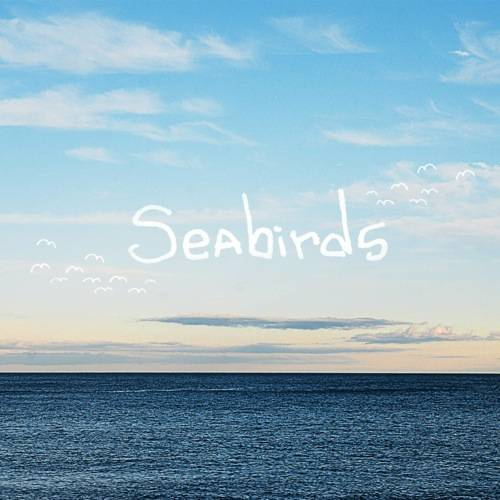

Promoting and distributing independent art on and off the web.

Biography
Nathaniel was born in a one-room house in the middle of the Maine woods without electricity, plumbing, or running water. He was taught to whistle at an extremely young age, eventually picked up the guitar, and later went on to study music composition at Clark University in Worcester, Mass. The circumstances of his non-traditional upbringing serves as a massive source of inspiration for his music.
Inspiration for Nathaniel's music comes from a variety of places. Nostalgia, longing, and nature are all important themes, but less abstract influences include musical acts/artists Boards of Canada, John Adams, Erik Satie, Toe, Tycho, and Cloudkicker.
Music from his debut album, "Whorl", was recently featured on NPR's Echoes with John Dilibreto, 90.5's Folk Revival with Nick Noble, and on Worcester's Ch. 3 WooTube show. It will also be serving as the complete soundtrack to a documentary about train travel through Europe by film-maker Sander Van Den Berg.

Dream & Seabirds

Nathaniel's latest releases, "Dream" and "Seabirds" can be downloaded from his bandcamp page, and physical releases are available from WTM's store.
Although these releases are listed as pay-what-you-want, please consider the great deal of time and effort that went into the production, and help make future releases possible.

Nathaniel's Links